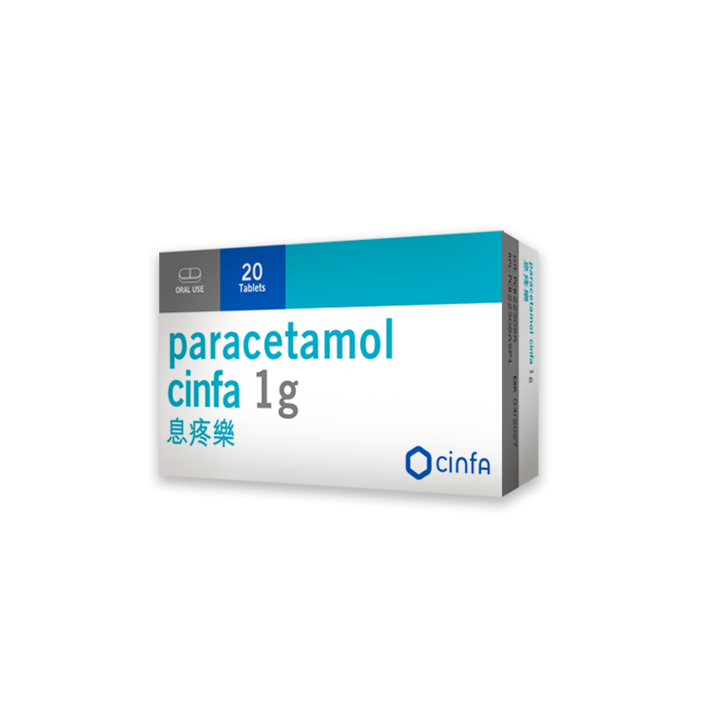
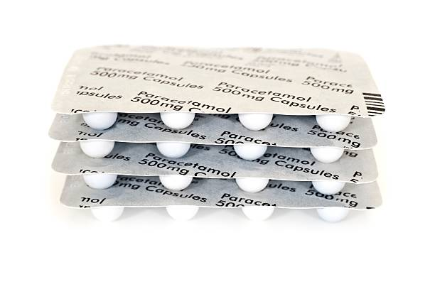

MediSync Senior es la app accesible con doble vista (Mamá y Cuidador) que muestra la foto real de la caja, habla en voz alta y sincroniza las tomas en tiempo real.
5+
horas/semana recuperadas
2
vistas sincronizadas
100%
accesible por voz
Hola, María
Toma de Medicina
1 Pastilla para la Presión
LOSARTÁN
50 mg“María y los adultos mayores tienen problemas para tomar la medicina correcta porque las cajas son idénticas y sufren olvidos, y eso le cuesta complicaciones de salud y 5+ horas a su cuidador.”
Frase oficial aprobada · MediSync Senior
5+ h
Perdidas a la semana por el cuidador
Llamadas, verificaciones y vueltas para confirmar si Mamá ya tomó su dosis.
Riesgo
de urgencias por dosis dobles o descompensación
Dosis omitidas o repetidas por confusión entre medicamentos de apariencia similar.
Ilegible
Cajas e instrucciones enanas para el adulto mayor
Letras pequeñas, empaques parecidos y sin apoyo visual ni de voz.
“A mí a veces me da miedo tomarme la pastilla de la presión porque no sé si ya me la tomé a las 8 de la mañana o si la que tengo en la mano era la del colesterol. Las cajitas que me da la EPS son todas blancas con una franja azul chiquita.”
María, 72 años · Usuaria final
“Todos los días tengo que llamar a mi mamá a las 10:00 a. m. y a las 2:00 p. m. sin falta. Pierdo fácilmente más de una hora diaria entre llamadas, organizar los pastilleros los domingos y la angustia de pensar que pueda terminar hospitalizada.”
Santiago López Vélez, 35 años · Cuidador e hijo
MediSync Senior conecta a Mamá y a Santiago en tiempo real, con la foto real y la voz.
El cuidador toma foto de la caja y de la pastilla. La IA extrae nombre, dosis y color y actualiza la pantalla de Mamá.
La app proyecta en la pantalla de Mamá la foto gigante de la caja y le habla en voz alta la instrucción.
Mamá oprime un solo botón verde y Santiago recibe la confirmación en tiempo real. Sin llamadas, sin dudas.
Citas médicas
Recordatorios dobles: voz a Mamá 1 día antes y alerta a Santiago.
Cumplimiento
Gráfico semanal del adherimiento de Mamá para el cuidador.
Ayuda urgente
Botón para llamar a Santiago y asistente por voz.
Accesible
Letras grandes, contraste alto y todo por voz.
Comparación con las soluciones existentes más usadas.
| Solución | Aportes | Limitaciones | Costo |
|---|---|---|---|
| Medisafe | Recordatorios, registro de medicamentos y “Medfriend” (familiar/cuidador). | Interfaz densa para baja visión; no identifica el empaque real. | Gratis + Premium |
| MyTherapy | Recordatorios, registro de tomas y seguimiento de síntomas. | Depende de texto en pantalla; sin identificación visual central. | Gratis |
| Pastilleros semanales | Económicos, fáciles de entender, sin internet. | No avisan si se olvida una toma; requieren organización manual. | $15.000–$30.000 COP |
| MediSync Senior | Foto real de la caja, voz, doble vista (Mamá/Cuidador), sincronización en tiempo real. | Prototipo; requiere validación con usuarios reales. | — |
Cifras como metas iniciales; requieren validación con pruebas de usabilidad y uso real.
Así funciona MediSync Senior por dentro. Cada componente está diseñado para ser simple, accesible y seguro.
Santiago escanea la caja y la pastilla con la cámara del celular. La IA reconoce el medicamento y extrae nombre, dosis y horario automáticamente.
No más confusiones entre cajas idénticas.
En la pantalla de Mamá aparece la foto real de la caja en tamaño gigante. Así ella reconoce visualmente qué medicina debe tomar.
Ideal para adultos mayores con visión reducida.
La app le habla a Mamá en voz alta: "Es hora de tomar tu Losartán, 1 tableta". Instrucciones claras y repetibles.
Accesible para personas con dificultad de lectura.
Mamá oprime un solo botón verde grande: "¡YA ME LA TOMÉ!". Sin menús complicados, sin pasos extras.
Un solo toque, cero confusión.
Al confirmar la toma, Santiago recibe la notificación al instante. Sin llamadas, sin mensajes, sin dudas.
Funciona con Supabase/Google en Paired o en modo local con Demo.
Santiago ve el historial completo de tomas, gráficos de adherencia y alertas si María olvida una dosis.
Datos para el médico en la próxima cita.
Navega la app real con doble vista (Mamá y Santiago), añade medicamentos con fotos, confirma tomas y programa citas médicas. Todo sincronizado en tiempo real.
Caja y pastillas reconocidas por la app


MediSync Senior frente a las soluciones tradicionales. Mira la diferencia en tiempo real.
Pastillero físico con alarma genérica
Presentación del problema, la solución, el prototipo funcional y el modelo de negocio de MediSync Senior.
$15.000.000
COP por el 12% de participación
Resumen ejecutivo y documento completo para la materia TICs y Competencias Digitales.
Ensayo completo (DOCX)
Formato APA 7 · Versión final
Documento académico con marco teórico, metodología, resultados y conclusiones sobre la adherencia médica en adultos mayores y el rol de la tecnología.
Descargar DOCXResumen ejecutivo
Lectura rápida · APA 7
Síntesis del problema, la propuesta MediSync Senior, el prototipo y las conclusiones clave del ensayo.
El equipo utilizó Gemini 3 Flash (Google) como herramienta de apoyo para revisar redacción, ortografía y formato APA 7, organizar ideas del guion del video pitch y sugerir mejoras de estructura en el prototipo con Tailwind CSS. La investigación de campo, entrevistas, planteamiento del problema, decisiones de diseño, lógica del prototipo y conclusiones fueron realizadas por los autores: Santiago López Vélez y Brayan Alejandro Ortiz Calle.
Herramientas utilizadas: Google Drive/Docs, HTML5 y Tailwind CSS, JavaScript, CapCut y Clipchamp, GitHub Pages y Canva Sites.
Dos roles clave para llevar MediSync Senior del problema a la solución.
Líder de Pitch y Video
Conducción del pitch estilo Shark Tank, guion del video de 4 minutos y presentación del pedido de inversión.
Portafolio profesionalLíder de Prototipo y Desarrollo Web
Diseño y desarrollo del prototipo funcional web con doble vista, voz y sincronización.
Portafolio profesionalLa falta de adherencia a los tratamientos farmacológicos es una situación frecuente en adultos mayores, especialmente cuando deben manejar varios medicamentos al mismo tiempo. En muchos casos, el problema no se debe únicamente al olvido: también influyen las letras pequeñas de los empaques, la similitud entre las cajas, los cambios de horario y las dificultades de memoria o visión. A partir de esa realidad, este trabajo propone MediSync Senior, un prototipo digital pensado para acompañar tanto al adulto mayor como a su cuidador. La propuesta integra una interfaz sencilla, recordatorios con voz, reconocimiento visual de empaques mediante OCR y una vista especial para el cuidador. El documento presenta el problema, la experiencia recogida en el entorno familiar, una comparación con soluciones existentes, la descripción de la solución y las herramientas utilizadas durante el desarrollo.
Palabras clave: adherencia farmacológica, adulto mayor, accesibilidad digital, cuidador informal, visión artificial, recordatorios de medicamentos.